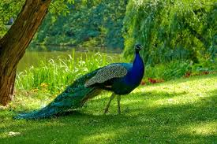
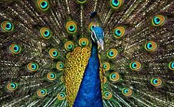

PEACOCK


In both species of Pavo, the male has a 90–130-cm (35–50-inch) body and 150-cm (60-inch) train of tail feathers that are coloured a brilliant metallic green. This train is mainly formed of the bird’s upper tail coverts, which are enormously elongated. Each feather is tipped with an iridescent eyespot that is ringed with blue and bronze. In courtship displays, the cock elevates his tail, which lies under the train, thus elevating the train and bringing it forward. At the climax of this display, the tail feathers are vibrated, giving the feathers of the train a shimmering appearance and making a rustling sound.
The blue peacock’s body feathers are mostly metallic blue-green. The green peacock, with a train much like that of the blue, has green and bronze body feathers. Hens of both species are green and brown and are almost as big as the male but lack the train and the head ornament. In the wild, both species live in open lowland forests, flocking by day and roosting high in trees at night. During the breeding season, the male forms a harem of two to five hens, each of which lays four to eight whitish eggs in a depression in the ground. The eggs are incubated by the peahen until they hatch some 28 days later. The chicks have all of their feathers when they emerge from their eggs and are capable of flight roughly one week after hatching. Most blue and green peafowl become sexually mature at age three. However, some male blue peafowl have been known to breed as early as age two.
As an ornamental bird, the peacock is a staple resident of many of the world’s zoos and has long been famous throughout the Old World. Green peacocks in captivity must be kept apart from other fowl, though, because of their aggressive disposition. Blue peacocks, though native to warm humid climates, can survive northern winters. Green peacocks, however, cannot tolerate much cold. The Congo peacock is the only large phasianid in Africa. The cock is mainly blue and green with a short rounded tail. The hen is reddish and green with a brown topknot. The species is smaller than those in genus Pavo, growing to roughly between 64 and 70 cm (25 to 28 inches) in length by adulthood.